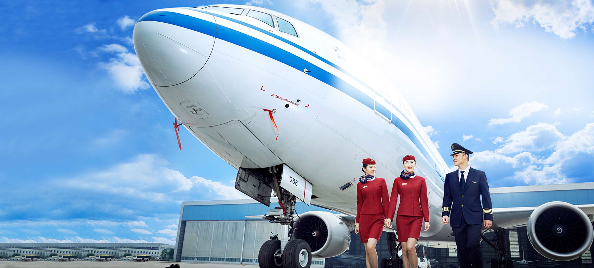

Welcome to Air China
Today’s Air China can trace its origins to 1988 when Air China International Corporation was established. In October 2002, based on an industry reform plan formulated by the central government, Air China International Corporation, China Aviation Corporation and China Southwest Airlines merged, and the surviving company was still called Air China International Corporation. In September 30, 2004, Air China International Corporation was rebranded as Air China Limited. In December 2004 Air China Limited became a publicly traded company on Hong Kong Stock Exchange (SEHK: 0753) and London Stock Exchange (LSE: AIRC).
